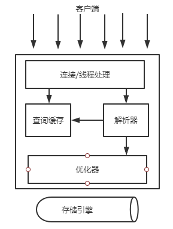

高性能MySQL 读书笔记一
一、MySQL的逻辑架构

最上面一层的服务是基于网络的客户端/服务器的工具。提供连接处理、授权认证、安全等等功能。
第二层架构是MySQL比较有意思的部分。包含了MySQL大多数的核心服务功能，查询解析、分析、优化、缓存以及所有内置函数（日期、时间、数字和加密函数）。所有跨存储引擎的功能都在这一层实现：存储过程、触发器、视图等。
第三层包含了存储引擎。存储引擎负责MySQL中数据的存储和提取。服务器通过API与存储引擎进行通信。这些接口屏蔽了不同存储引擎之间的差异，使得这些差异对上层的查询过程透明。存储引擎API包含了几十个底层函数，用于执行诸如”开始一个事务“或者”根据主键提取一行记录“等操作。不同存储引擎之间不会相互通信，而只是简单地响应上层服务器的请求。
1.1 连接管理与安全性
每个客户端连接都会在服务器进程中拥有一个线程，这个连接的查询只会在这个单独的线程中执行，该线程只能轮流在某个CPU核心或者CPU中运行。服务器会负责缓存线程，因此不需要为每个新建的连接创建或者销毁线程。
MySQL 5.5以上的更新提供了一个API，支持线程池，可以使用池中少量的线程来服务大量的连接。
客户端连接MySQL服务器时，需要对其进行认证。认证基于用户名、密码、主机信息。可以使用安全套接字（SSL）的方式连接，也可以使用X.509证书认证。连接成功后，服务器会继续验证该客户端是否具有执行某个特定查询的权限。
1.2 优化与执行
MySQL会解析查询，并创建内部数据结构（解析树），然后对其进行各种优化，包括重写查询、决定表的读取顺序，以及选择合适的索引等。
优化器并不关心表使用的存储引擎，但存储引擎对优化查询是有影响的。优化器会请求存储引擎提供容量或某个具体操作的开销信息，以及表数据的统计信息等。
举个栗子。SELECT语句，在解析查询之前，服务器会先检查查询缓存，如果能直接找到对应查询，服务器就不必再执行查询解析、优化和执行整个过程，而是直接返回查询缓存中的结果集。
二、并发控制
本节讨论的是服务器层与存储引擎层的并发控制。而解决多个进程之间的并发冲突问题，用的是锁（LOCK）。
2.1 读写锁
读写锁分为共享锁(shared lock)/读锁(read lock)和排他锁(exclusive lock)/写锁(write lock)。
共享锁是共享的，或者说互相不阻塞。多个客户在同一时刻可以同时读取同一个资源，而互不干扰。
排他锁是排他的，即一个写锁能够阻塞其他的写锁和读锁，这是处于安全策略的考虑，只有这样，才能保证，同一时间内，只有一个用户写入且防止其他用户读取。
大多数时候，MySQL锁的内部管理都是透明的。
2.2 锁粒度
一种提高共享资源并发性的方式就是让锁定对象更有选择性。最理想的方式是只会对修改的数据片进行精密的锁定。
任何时候，在给定资源上，锁定的数据量越少，则系统的并发程度越高，只要相互之间不发生冲突即可。
问题来了，加锁也需要消耗资源。锁的各种操作，获得锁、检查锁是否已经解除、释放锁等，都会增加系统的开销。如果系统花费大量时间来管理锁而不是存储数据，那么系统的性能可能会因此受到影响。
MySQL提供了多种选择，每种MySQL存储引擎都可以实现自己的锁策略和锁粒度。在存储引擎的设计中，锁管理是个非常重要的决定。将锁粒度固定在某个级别，可以为某些特定的应用场景提供更好的性能，但同时会失去对另外一些应用场景的良好支持。好在MySQL支持多个存储引擎的架构，不需要单一的通用解决方案。下面介绍两种最重要的锁策略：
- 表锁（table lock）
表锁是MySQL中最基本的锁策略，并且是开销最小的策略。表锁的加锁机制：会锁定整张表。一个用户在对表进行写操作前，需要先获得写锁，这回阻塞其他用户对该表的所有读写操作。只有没有写锁时，其他读取的用户才能获得读锁，读锁之间是不相互阻塞的。
- 行级锁（row lock）
行级锁可以最大程度地支持并发处理。众所周知，在InnoDB和XtraDB，以及其他一些存储引擎中实现了行级锁。行级锁只在存储引擎层实现，而MySQL服务器层没有实现。服务器层完全不了解存储引擎中的锁实现。
三、事务
事务：一组原子性的SQL查询。
事务的ACID特性：
- 原子性：一个事务必须被视为一个不可分割的最小工作单位。
- 一致性：数据库总是从一个一致性的状态转换到另外一个一致性的状态。
- 隔离性：一个事务所做修改在提交之前，对其他事务是不可见的。
- 持久性：一旦事务提交，事务所做的修改就会永久地保存到数据库中。
举个例子，假设一个银行有两张表：支票表(checking)和储蓄表(saving)。用户从支票账户中转移200RMB到储蓄账户，那么至少需要三步：
- 检查支票账户的余额高于200元；
- 从支票账户余额中减去200元；
- 在储蓄账户余额中增加200元。
我们来实现一下这个事务：
1 | START TRANSACTION; |
就像锁粒度的升级会增加系统开销一样，这种事务处理过程中额外的安全性，也会需要数据库系统做更多的额外工作。
3.1 隔离级别
SQL标准中定义了四种隔离级别。
| 隔离级别 | 脏读可能性 | 不可重复读可能性 | 幻读可能性 | 加锁读 |
|---|---|---|---|---|
| READ UNCOMMITTED | Yes | Yes | Yes | No |
| READ COMMITTED | No | Yes | Yes | No |
| REPEATABLE READ | No | No | Yes | No |
| SERIALIZABLE | No | No | No | Yes |
3.2 死锁
死锁是指两个或者多个事务在同一资源上相互占用，并请求锁定对方占用的资源，从而导致恶性循环的现象。当多个事务试图以不同的顺序锁定资源时，就可能会产生死锁。
例如，两个事务同时处理checking表，就会出现死锁问题。
为了解决这种问题，数据库系统实现了各种死锁检测和死锁超时机制。InnoDB存储引擎能检测到死锁的循环依赖，并立即返回一个错误。还有就是，当查询的时间达到锁等待超时的设定后放弃锁请求，这种方式通常来说不太友好。目前InnoDB引擎处理死锁的方法是，将持有最少行级排他锁的事务进行回滚。
死锁的产生有双重原因：有些是因为真正的数据冲突，这种情况通常很难避免，但有些则完全是由于存储引擎的实现方式导致的。
3.3 事务日志
事务日志可以帮助提高事务的效率。
使用事务日志，存储引擎在修改表的数据时只需要修改其内存拷贝，再把修改行为记录到持久在硬盘上的事务日记中，而不用每次都将修改的数据本身持久到磁盘。
事务日志采用的是追加的方式。因此写日志的操作是磁盘上一小块区域内的顺序I/O，而不像随机I/O需要在磁盘的多个地方移动磁头，所以采用事务日志的方式相对来说要快的多。事务日志持久以后，内存中修改的数据在后台可以慢慢地刷回到磁盘。目前大多数存储引擎都是这样实现地，我们通常称之为预写式日志（Write-Ahead Logging），修改数据需要写两次磁盘。
3.4 MySQL中的事务
MySQL提供两种事务型的存储引擎：InnoDB和NDB Cluster。另外还有一些第三方
存储引擎也支持事务，比较知名的包括XtraDB和PBXT。
- 自动提交 MySQL默认采用自动提交(AUTOCOMMIT)模式。另外还有一些命令，在执行之前会强制执行COMMIT提交当前的活动事务。MySQL可以通过执行
SET TRANSACTION ISOLATION LEVEL命令来设置隔离级别。 - 在事务中混合使用存储引擎 MySQL服务层不管理事务，事务是由下层的存储引擎实现的。所以在同一个事务中，使用多种存储引擎是不可靠的。如果在事务中混合使用了事务型和非事务型的表，在正常提交的情况下不会有什么问题。但如果该事务需要回滚，非事务型的表上的变更就无法撤销，这会导致数据库处于不一致的状态，这种情况很难修复，事务的最终结果将无法确定。所以，为每张表选择合适的存储引擎非常重要。
- 隐式和显式锁定 InnoDB采用的是两阶段锁定协议。在事务执行过程中，随时都可以执行锁定，锁只有在执行COMMIT或者ROLLBACK的时候才会释放，并且所有的锁是在同一时刻倍释放。前面描述的锁定都是隐式锁定，InnoDB会根据隔离级别在需要的时候自动加锁。
四、MySQL的存储引擎
InnoDB存储引擎 MySQL的默认事务型引擎，也是最重要、使用最广泛的存储引擎。它被设计用来处理大量的短期事务，短期事务大部分情况是正常提交的，很少会被回滚。
InnoDB的数据存储在表空间中，表空间是由InnoDB管理的一个黑盒子，由一系列的数据文件组成。
InnoDB采用MVCC来支持高并发，并且实现了四个标准的隔离级别。(其默认级别是REPEATABLE READ，通过间隙锁策略防止幻读的出现。)
InnoDB表是基于聚簇索引建立的。
InnoDB内部做了很多优化，包括可预测性预读、hash索引、自适应哈希索引、能够加速插入操作的插入缓冲区。
MyISAM存储引擎 在MySQL5.1及之前的版本，MyISAM是默认的存储引擎，是非事务型引擎。
MyISAM会将表存储在两个文件中：数据文件和索引文件。
MyISAM的特性：
1. 加锁与并发 2. 修复 3. 索引特性 4. 延迟更新索引键MyISAM最典型的性能问题还是表锁问题，如果你发现所有的查询都长期处于“Locked”状态，那么毫无疑问表锁就是罪魁祸首。
Archive引擎 Archive存储引擎支持INSERT和SELECT操作。可以实现高并发的插入。（快速插入处理的场景下使用）
Blackhole引擎 没有实现任何存储己机制，会丢弃所有插入的数据，不做任何保存，但是服务器会记录Blackhole的日志。所以可以用于复制数据到备份库，或者记录日志。（一般不使用）
CSV引擎 CSV引擎可以将普通的CSV文件作为MySQL的表来处理，但这种表不支持索引。（一般用来处理csv文件）
Federated引擎 Federated引擎是访问其他MySQL服务器的一个代理，它会创建一个到远程MySQL服务器的客户端连接，并将查询传输到远程服务器执行，然后提取或发送需要的数据。（一般不使用）
Memory引擎 如果需要快速访问数据，并且这些数据不会被修改，重启以后丢失也没关系，那么使用Memory表非常有用。因为所有数据保存在内存，查询速度比MyISAM快一个数量级，表结构在重启后还在，但是数据会丢失。（适合场景：用于查找表、映射表、周期性聚合数据的结果、保存数据分析中产生的中间数据。
Memory表和临时表的区别：临时表是使用
CREATE TEMPORARY TABLE命令创建的表，可以用于任何存储引擎，而且临时表只在单个连接中可见，连接断开，临时表将不复存在。Merge引擎 Merge引擎是MyISAM引擎的一个变种。Merge表是由多个MyISAM表合并而来的虚拟表。
- NDB集群引擎 MySQL AB公司从索尼爱立信公司收购了NDB数据库，然后开发了NDB集群引擎。